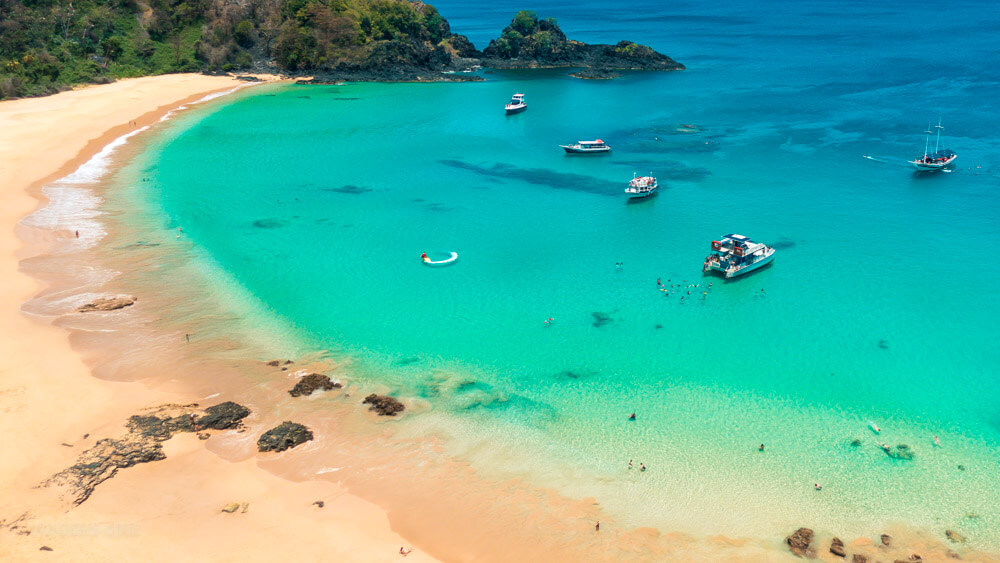

- Considerada uma das melhores do mundo, famosa por suas águas cristalinas e rica vida marinha.
- Acesso desafiador, mas a beleza natural compensa.

- Ícone carioca, conhecida por sua extensa faixa de areia e calçadão movimentado.
- Oferece uma vibrante vida noturna e diversas opções de lazer.

- Famosa pelo charme e estilo, atrai surfistas e turistas.
- O pôr do sol no Arpoador é um espetáculo imperdível.

- Conhecida como o "Caribe brasileiro", com águas mornas e piscinas naturais.
- Ideal para snorkeling e relaxamento.

- Um paraíso com dunas, lagoas e falésias, famosa por seus pores do sol.
- Oferece atividades como kitesurf e passeios de buggy.